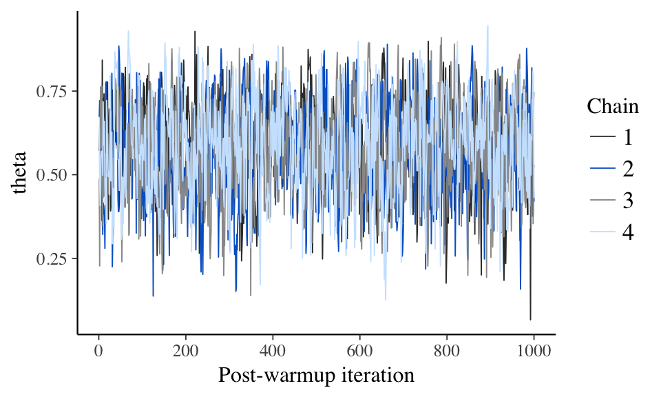
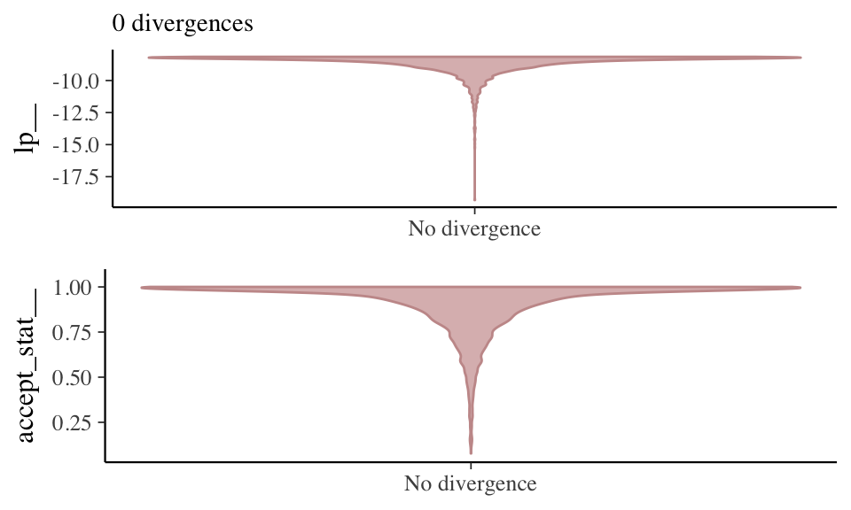

Diagnostics
12/16/2017
The Data: One Process
Independent observations with two possible outcomes on a trial.
## In file included from file17ef7d0cfd02.cpp:8:
## In file included from /Library/Frameworks/R.framework/Versions/3.3/Resources/library/StanHeaders/include/src/stan/model/model_header.hpp:4:
## In file included from /Library/Frameworks/R.framework/Versions/3.3/Resources/library/StanHeaders/include/stan/math.hpp:4:
## In file included from /Library/Frameworks/R.framework/Versions/3.3/Resources/library/StanHeaders/include/stan/math/rev/mat.hpp:4:
## In file included from /Library/Frameworks/R.framework/Versions/3.3/Resources/library/StanHeaders/include/stan/math/rev/core.hpp:12:
## In file included from /Library/Frameworks/R.framework/Versions/3.3/Resources/library/StanHeaders/include/stan/math/rev/core/gevv_vvv_vari.hpp:5:
## In file included from /Library/Frameworks/R.framework/Versions/3.3/Resources/library/StanHeaders/include/stan/math/rev/core/var.hpp:7:
## In file included from /Library/Frameworks/R.framework/Versions/3.3/Resources/library/BH/include/boost/math/tools/config.hpp:13:
## In file included from /Library/Frameworks/R.framework/Versions/3.3/Resources/library/BH/include/boost/config.hpp:39:
## /Library/Frameworks/R.framework/Versions/3.3/Resources/library/BH/include/boost/config/compiler/clang.hpp:200:11: warning: 'BOOST_NO_CXX11_RVALUE_REFERENCES' macro redefined [-Wmacro-redefined]
## # define BOOST_NO_CXX11_RVALUE_REFERENCES
## ^
## <command line>:6:9: note: previous definition is here
## #define BOOST_NO_CXX11_RVALUE_REFERENCES 1
## ^
## 1 warning generated.
##
## Gradient evaluation took 1.1e-05 seconds
## 1000 transitions using 10 leapfrog steps per transition would take 0.11 seconds.
## Adjust your expectations accordingly!
##
##
##
## Elapsed Time: 0.014303 seconds (Warm-up)
## 0.012346 seconds (Sampling)
## 0.026649 seconds (Total)
##
##
## Gradient evaluation took 4e-06 seconds
## 1000 transitions using 10 leapfrog steps per transition would take 0.04 seconds.
## Adjust your expectations accordingly!
##
##
##
## Elapsed Time: 0.010302 seconds (Warm-up)
## 0.013932 seconds (Sampling)
## 0.024234 seconds (Total)
##
##
## Gradient evaluation took 3e-06 seconds
## 1000 transitions using 10 leapfrog steps per transition would take 0.03 seconds.
## Adjust your expectations accordingly!
##
##
##
## Elapsed Time: 0.011496 seconds (Warm-up)
## 0.013336 seconds (Sampling)
## 0.024832 seconds (Total)
##
##
## Gradient evaluation took 5e-06 seconds
## 1000 transitions using 10 leapfrog steps per transition would take 0.05 seconds.
## Adjust your expectations accordingly!
##
##
##
## Elapsed Time: 0.010709 seconds (Warm-up)
## 0.011854 seconds (Sampling)
## 0.022563 seconds (Total)Use ggplot to generate a data graph showing successes, failures, and total observations. 
The Model
A graphical representation of the model shows:
- a continuous, unobserved “process” parameter \(\theta\)
- a discrete, observable number of successes k
- a discrete, observable number of observations n
The vector’s arrow shows dependency. Successes are dependent on both the underlying process \(\theta\) and the number of observations.
The assumption for \(\theta\) is that all possible rates are equally likely. The Beta distribution is set with 1 “success” and 1 “failure”.
The assumption of k is that the outcomes are from a Binomial distribution with \(\theta\) determining the rate for n observations.
### Basic Stan OutputInfo from a S4 object of class stanfit
Use get_stancode to extract the model from the stan output
## // Infering a Rate "theta" of a binary process
## // Section 3.1
## // Figure 3.2
## data {
## int<lower=1> n; // at least one observation
## int<lower=0> k; // success count can not be negative
## }
##
## parameters {
## real<lower=0, upper=1> theta; // rate bounded by 0 and 1
## }
##
## model {
## //Prior Distribution for Rate Theta
## theta ~ beta(1, 1);
##
## // Observed Counts
## // k has a binomial distribution of n observations with theta variation
## k ~ binomial(n, theta);
## }Print on a stanfit object shows summary of parameter and log-posterior (lp__) posterior mean, posterior standard deviation, and quantiles:
- first parameter is “theta”
- second parameter is “lp__" - the log posterior density
- se_mean is the Monte Carlo standard error
- n_eff is the effective sample size
- Rhat is the R-hat statistic
Convergence of log posterior density is critical to declaring convergence (see stan-reference-2.16.0.pdf pg 368-369).
## Inference for Stan model: binomial_one_rate.
## 4 chains, each with iter=2000; warmup=1000; thin=1;
## post-warmup draws per chain=1000, total post-warmup draws=4000.
##
## mean se_mean sd 2.5% 25% 50% 75% 97.5% n_eff Rhat
## theta 0.58 0.00 0.14 0.30 0.48 0.58 0.68 0.83 1648 1
## lp__ -8.67 0.02 0.74 -10.81 -8.82 -8.39 -8.20 -8.15 1725 1
##
## Samples were drawn using NUTS(diag_e) at Sat Dec 16 12:27:32 2017.
## For each parameter, n_eff is a crude measure of effective sample size,
## and Rhat is the potential scale reduction factor on split chains (at
## convergence, Rhat=1).Diagnostics
Rhat - potential scale reduction statistic
If chains are at equilibrium, rhat will be 1. If the chains have not converged rhat will be greater than one.

neff_ratio - Look at effective sample size
Draws in a Markov chain are not independent if there is autocorrelation. If there is autocorrelation, the effective sample size will be smaller than the total sample size, N.
The larger the ratio of neff to N the better.
## theta lp__
## 0.4120353 0.4313311
mcmc_acf - Autocorrelation - centered parameterization (CP)
View autocorrelation for each Markov chain separately up to a specified number of lags.
Lag - the distance between successive samples.
The autocorrelation function (ACF) relates correlation and lag. The values of the ACF should quickly decrease with increasing lag. ACFs that do not decrease quickly with lag often indicate that the sampler is not exploring the posterior distribution efficiently and result in increased R^ values and decreased Neff values. (See Bayesian inference with Stan: A tutorial on adding custom distributions 
Evaluate NUTS sampler
Extract the log posterior over iterations. Extract iterations with divergence.
Trace plot of MCMC draws and divergence, if any, for NUTS.
## Iteration Value Chain
## 1 1 -8.360693 1
## 2 2 -8.196771 1
## 3 3 -9.723596 1
## 4 4 -8.314626 1
## 5 5 -9.895314 1
## 6 6 -9.122828 1## Iteration Parameter Value Chain
## 1 1 accept_stat__ 0.9447556 1
## 2 2 accept_stat__ 1.0000000 1
## 3 3 accept_stat__ 0.6408017 1
## 4 4 accept_stat__ 1.0000000 1
## 5 5 accept_stat__ 0.3673829 1
## 6 6 accept_stat__ 1.0000000 1## No divergences to plot.
A different look at divergence.
Divergences often indicate that some part of the posterior isn’t being explored. Divergence shows as distortions in the smooth funnel.

Other Diagnostics & Graphs
A more detailed summary.
## $summary
## mean se_mean sd 2.5% 25% 50%
## theta 0.5773151 0.003378536 0.1371595 0.2993314 0.4832189 0.5783767
## lp__ -8.6726841 0.017885551 0.7429125 -10.8128021 -8.8245552 -8.3932704
## 75% 97.5% n_eff Rhat
## theta 0.6793896 0.8303485 1648.141 1.000708
## lp__ -8.2023916 -8.1510614 1725.324 1.000807
##
## $c_summary
## , , chains = chain:1
##
## stats
## parameter mean sd 2.5% 25% 50% 75%
## theta 0.5663588 0.1419428 0.2922506 0.467130 0.5690747 0.6719294
## lp__ -8.7118830 0.7852922 -10.8394255 -8.872874 -8.4046407 -8.2132009
## stats
## parameter 97.5%
## theta 0.8330117
## lp__ -8.1513747
##
## , , chains = chain:2
##
## stats
## parameter mean sd 2.5% 25% 50%
## theta 0.5839208 0.1364415 0.2956341 0.4962677 0.5870431
## lp__ -8.6732204 0.7852458 -11.1709338 -8.7904591 -8.3884646
## stats
## parameter 75% 97.5%
## theta 0.6859116 0.8329932
## lp__ -8.1950169 -8.1507644
##
## , , chains = chain:3
##
## stats
## parameter mean sd 2.5% 25% 50% 75%
## theta 0.5772236 0.1334808 0.3125112 0.4822294 0.5804903 0.674813
## lp__ -8.6407682 0.6920058 -10.5854223 -8.7917958 -8.3807140 -8.199014
## stats
## parameter 97.5%
## theta 0.8246271
## lp__ -8.1510024
##
## , , chains = chain:4
##
## stats
## parameter mean sd 2.5% 25% 50%
## theta 0.5817572 0.1361712 0.3057664 0.4896599 0.5783317
## lp__ -8.6648648 0.7032406 -10.7775608 -8.8603567 -8.3929534
## stats
## parameter 75% 97.5%
## theta 0.6849353 0.8333689
## lp__ -8.2023793 -8.1515106point estimate and variability 2 levels
stan_trace(samples) stan_hist(samples) stan_dens(samples) stan_scat(samples) stan_diag(samples) stan_rhat(samples) stan_ess(samples) stan_mcse(samples) stan_ac(samples)
as.array(samples)[1:15,,2] # array: sample, chain, parameter
Copyright © 2017 OBrien Consulting - All rights reserved.